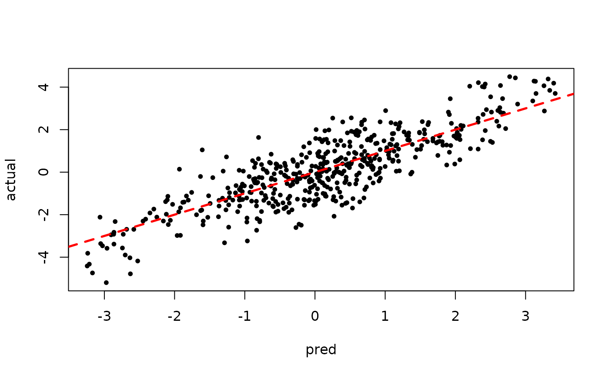
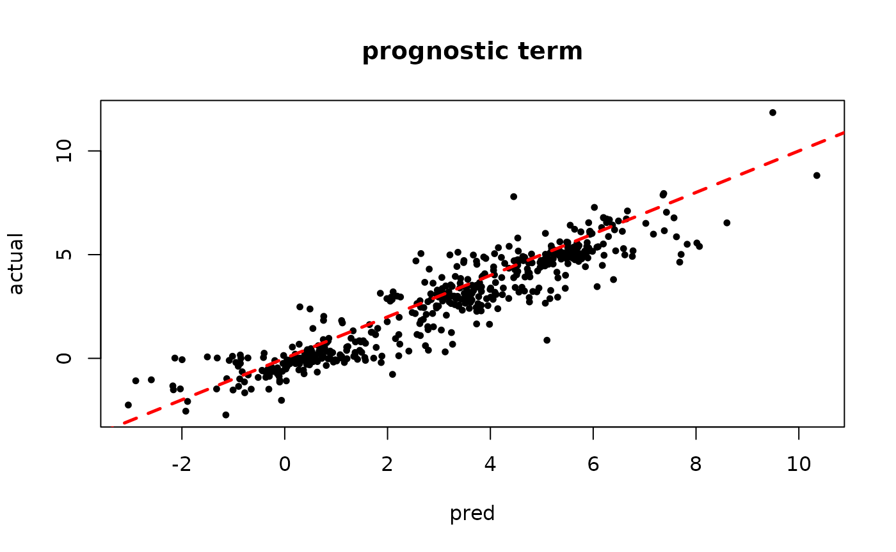
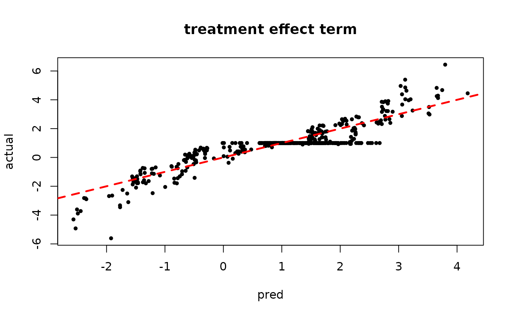
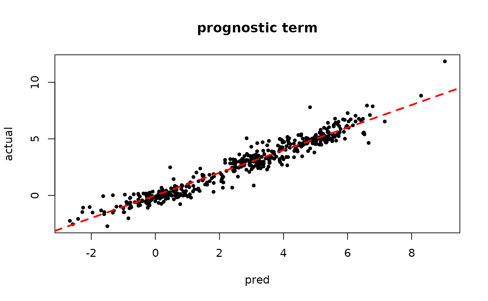
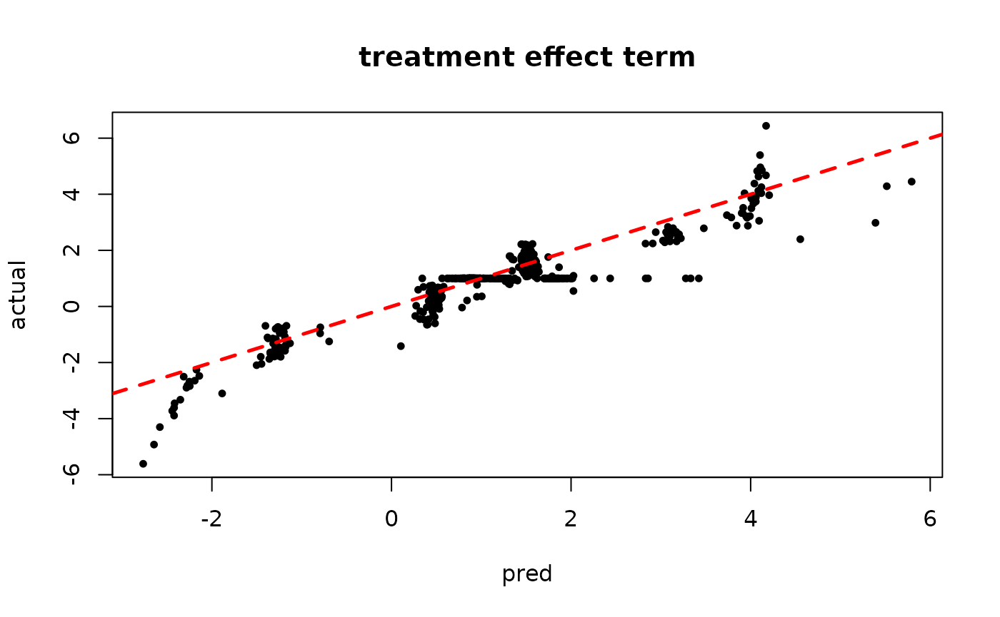
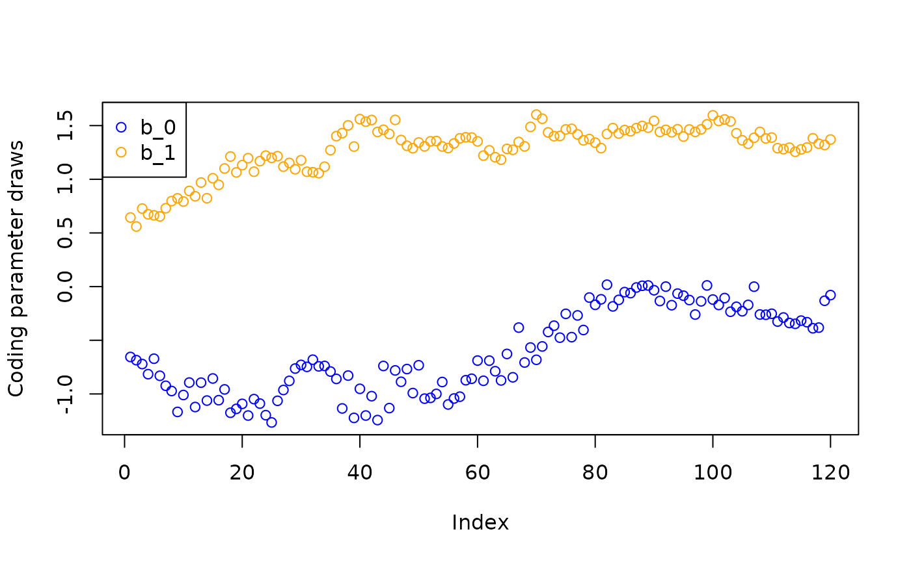

Prototype Interface in StochTree
Prototype-Interface.RmdMotivation
While the functions bart() and bcf()
provide simple and performant interfaces for supervised learning /
causal inference, stochtree also offers access to many of
the “low-level” data structures that are typically implemented in C++.
This low-level interface is not designed for performance or even
simplicity — rather the intent is to provide a “prototype” interface to
the C++ code that doesn’t require modifying any C++.
To illustrate when such a prototype interface might be useful, consider the classic BART algorithm:
OUTPUT: \(m\) samples of a decision forest with \(k\) trees and global variance parameter \(\sigma^2\)
Initialize \(\sigma^2\) via a default or a data-dependent calibration exercise
Initialize “forest 0” with \(k\) trees with a single root node, referring to tree \(j\)’s prediction vector as \(f_{0,j}\)
Compute residual as \(r = y - \sum_{j=1}^k f_{0,j}\)
FOR \(i\) IN \(\left\{1,\dots,m\right\}\):
Initialize forest \(i\) from forest \(i-1\)
FOR \(j\) IN \(\left\{1,\dots,k\right\}\):
Add predictions for tree \(j\) to residual: \(r = r + f_{i,j}\)
Update tree \(j\) via Metropolis-Hastings with \(r\) and \(X\) as data and tree priors depending on (\(\tau\), \(\sigma^2\), \(\alpha\), \(\beta\))
Sample leaf node parameters for tree \(j\) via Gibbs (leaf node prior is \(N\left(0,\tau\right)\))
Subtract (updated) predictions for tree \(j\) from residual: \(r = r - f_{i,j}\)
Sample \(\sigma^2\) via Gibbs (prior is \(IG(\nu/2,\nu\lambda/2)\))
While the algorithm itself is conceptually simple, much of the core computation is carried out in low-level languages such as C or C++ because of the tree data structure. As a result, any changes to this algorithm, such as supporting heteroskedasticity (Pratola et al. (2020)), categorical outcomes (Murray (2021)) or causal effect estimation (Hahn, Murray, and Carvalho (2020)) require modifying low-level code.
The prototype interface exposes the core components of the loop above at the R level, thus making it possible to interchange C++ computation for steps like “update tree \(j\) via Metropolis-Hastings” with R computation for a custom variance model, other user-specified additive mean model components, and so on.
To begin, load the stochtree package
Demo 1: Supervised Learning
Simulation
Simulate a simple partitioned linear model
# Generate the data
n <- 500
p_X <- 10
p_W <- 1
X <- matrix(runif(n*p_X), ncol = p_X)
W <- matrix(runif(n*p_W), ncol = p_W)
f_XW <- (
((0 <= X[,1]) & (0.25 > X[,1])) * (-3*W[,1]) +
((0.25 <= X[,1]) & (0.5 > X[,1])) * (-1*W[,1]) +
((0.5 <= X[,1]) & (0.75 > X[,1])) * (1*W[,1]) +
((0.75 <= X[,1]) & (1 > X[,1])) * (3*W[,1])
)
y <- f_XW + rnorm(n, 0, 1)
# Standardize outcome
y_bar <- mean(y)
y_std <- sd(y)
resid <- (y-y_bar)/y_stdSampling
Set some parameters that inform the forest and variance parameter samplers
alpha <- 0.9
beta <- 1.25
min_samples_leaf <- 1
num_trees <- 100
cutpoint_grid_size = 100
global_variance_init = 1.
tau_init = 0.5
leaf_prior_scale = matrix(c(tau_init), ncol = 1)
nu <- 4
lambda <- 0.5
a_leaf <- 2.
b_leaf <- 0.5
leaf_regression <- T
feature_types <- as.integer(rep(0, p_X)) # 0 = numeric
var_weights <- rep(1/p_X, p_X)Initialize R-level access to the C++ classes needed to sample our model
# Data
if (leaf_regression) {
forest_dataset <- createForestDataset(X, W)
outcome_model_type <- 1
} else {
forest_dataset <- createForestDataset(X)
outcome_model_type <- 0
}
outcome <- createOutcome(resid)
# Random number generator (std::mt19937)
rng <- createRNG()
# Sampling data structures
forest_model <- createForestModel(forest_dataset, feature_types,
num_trees, n, alpha, beta, min_samples_leaf)
# Container of forest samples
if (leaf_regression) {
forest_samples <- createForestContainer(num_trees, 1, F)
} else {
forest_samples <- createForestContainer(num_trees, 1, T)
}Prepare to run the sampler
num_warmstart <- 10
num_mcmc <- 100
num_samples <- num_warmstart + num_mcmc
global_var_samples <- c(global_variance_init, rep(0, num_samples))
leaf_scale_samples <- c(tau_init, rep(0, num_samples))Run the grow-from-root sampler to “warm-start” BART
for (i in 1:num_warmstart) {
# Sample forest
forest_model$sample_one_iteration(
forest_dataset, outcome, forest_samples, rng, feature_types,
outcome_model_type, leaf_prior_scale, var_weights,
global_var_samples[i], cutpoint_grid_size, gfr = T
)
# Sample global variance parameter
global_var_samples[i+1] <- sample_sigma2_one_iteration(
outcome, rng, nu, lambda
)
# Sample leaf node variance parameter and update `leaf_prior_scale`
leaf_scale_samples[i+1] <- sample_tau_one_iteration(
forest_samples, rng, a_leaf, b_leaf, i-1
)
leaf_prior_scale[1,1] <- leaf_scale_samples[i+1]
}Pick up from the last GFR forest (and associated global variance / leaf scale parameters) with an MCMC sampler
for (i in (num_warmstart+1):num_samples) {
# Sample forest
forest_model$sample_one_iteration(
forest_dataset, outcome, forest_samples, rng, feature_types,
outcome_model_type, leaf_prior_scale, var_weights,
global_var_samples[i], cutpoint_grid_size, gfr = F
)
# Sample global variance parameter
global_var_samples[i+1] <- sample_sigma2_one_iteration(
outcome, rng, nu, lambda
)
# Sample leaf node variance parameter and update `leaf_prior_scale`
leaf_scale_samples[i+1] <- sample_tau_one_iteration(
forest_samples, rng, a_leaf, b_leaf, i-1
)
leaf_prior_scale[1,1] <- leaf_scale_samples[i+1]
}Predict and rescale samples
# Forest predictions
preds <- forest_samples$predict(forest_dataset)*y_std + y_bar
# Global error variance
sigma_samples <- sqrt(global_var_samples)*y_stdResults
Inspect the initial samples obtained via “grow-from-root” (He and Hahn (2023))
plot(sigma_samples[1:num_warmstart], ylab="sigma")
plot(rowMeans(preds[,1:num_warmstart]), y, pch=16,
cex=0.75, xlab = "pred", ylab = "actual")
abline(0,1,col="red",lty=2,lwd=2.5)
Inspect the BART samples obtained after “warm-starting”
plot(sigma_samples[(num_warmstart+1):num_samples], ylab="sigma")
plot(rowMeans(preds[,(num_warmstart+1):num_samples]), y, pch=16,
cex=0.75, xlab = "pred", ylab = "actual")
abline(0,1,col="red",lty=2,lwd=2.5)
Demo 2: Causal Inference
Here we show how to implement the Bayesian Causal Forest (BCF) model
of Hahn, Murray, and Carvalho (2020) using
stochtree’s prototype API, including demoing a non-trivial
sampling step done at the R level.
Background
While the supervised learning case of the previous demo is conceptually simple, we motivate the causal effect estimation task with some additional notation. Let \(y\) refer to a continuous outcome of interest, \(Z\) refer to a binary treatment, and \(X\) to a set of covariates that may influence \(Y\), \(Z\), or both.
If \(X\) is an exhaustive set of covariates that influence \(Z\) and \(Y\), we can specific \(Y\) in terms of a causal model (see for example Pearl (2009)) as \[\begin{equation*} \begin{aligned} Y &= F(Z, X, \epsilon_Y) \end{aligned} \end{equation*}\] where \(\epsilon_Y\) is outcome specific random noise and \(F\) is a function that generates \(Y\) (in many cases, \(F\) can be thought of as the inverse of the CDF conditional on \(X\) and \(Z\)).
The “potential outcomes” (see Imbens and Rubin (2015)) can be recovered by \(Y^1 = F(1, X, \epsilon_Y)\) and \(Y^0 = F(0, X, \epsilon_Y)\).
The causal outcome model can be decomposed into “mean” and “error” terms as below \[\begin{equation*} \begin{aligned} Y &= \mu(X) + Z\tau(X) + \left[\eta(X) + Z\delta(X)\right]\\ \mu(X) &= \mathbb{E}_{\epsilon_Y}\left[F(0, X, \epsilon_Y)\right]\\ \tau(X) &= \mathbb{E}_{\epsilon_Y}\left[F(1, X, \epsilon_Y) - F(0, X, \epsilon_Y)\right]\\ \eta(X) &= F(0, X, \epsilon_Y) - \mathbb{E}_{\epsilon_Y}\left[F(0, X, \epsilon_Y)\right]\\ \delta(X) &= F(1, X, \epsilon_Y) - F(0, X, \epsilon_Y) - \mathbb{E}_{\epsilon_Y}\left[F(1, X, \epsilon_Y) - F(0, X, \epsilon_Y)\right] \end{aligned} \end{equation*}\]
Here \(\tau(X)\) is precisely the conditional average treatment effect (CATE) estimand. Unfortunately, the functional form of \(F\) is unavailable for analysis, so that \(\tau(X)\) cannot be derived.
This is where flexible, regularized nonparametrics enter the picture, as we aim to estimate \(\mu(X)\) and \(\tau(X)\) from data.
Bayesian Causal Forest (BCF)
BCF estimates \(\mu(X)\) and \(\tau(X)\) using separate BART forests for each term. Furthermore, rather than rely on the common implicit coding of \(Z\) as 0 for control observations and 1 for treated observations, they consider coding control observations with a parameter \(b_0\) and treated observations with a parameter \(b_1\). Placing a \(N(0,1/2)\) prior on each \(b_z\), this essentially redefines the outcome model as \[\begin{equation*} \begin{aligned} y &= \mu(X) + \tau(X) f(Z) + \epsilon\\ f(Z) &= b_0(1-Z) + b_1 Z\\ \epsilon &\sim N\left(0, \sigma^2\right)\\ b_0, b_1 &\sim N\left(0, 1/2\right) \end{aligned} \end{equation*}\]
Updating each \(b_z\) requires an additional Gibbs step, which we derive here. Conditioning on sampled forests \(\mu\) and \(\tau\), we are essentially regressing \(y - \mu(Z)\) on \(\left[(1-Z)\tau(X), Z\tau(X)\right]\) which has a closed form posterior \[\begin{equation*} \begin{aligned} b_0 \mid y, X, \mu,\tau &\sim N\left(\frac{s_{y\tau,0}}{s_{\tau\tau,0} + 2\sigma^2}, \frac{\sigma^2}{s_{\tau\tau,0} + 2\sigma^2}\right)\\ b_1 \mid y, X, \mu,\tau &\sim N\left(\frac{s_{y\tau,1}}{s_{\tau\tau,1} + 2\sigma^2}, \frac{\sigma^2}{s_{\tau\tau,1} + 2\sigma^2}\right) \end{aligned} \end{equation*}\] where \(s_{y\tau,z} = \sum_{i: Z_i = z} (y_i - \mu(X_i))\tau(X_i)\) and \(s_{\tau\tau,z} = \sum_{i: Z_i = z} \tau(X_i)\tau(X_i)\).
Simulation
The simulated causal DGP mirrors the nonlinear, heterogeneous treatment effect DGP presented in Hahn, Murray, and Carvalho (2020).
n <- 500
x1 <- rnorm(n)
x2 <- rnorm(n)
x3 <- rnorm(n)
x4 <- as.numeric(rbinom(n,1,0.5))
x5 <- as.numeric(sample(1:3,n,replace=T))
X <- cbind(x1,x2,x3,x4,x5)
p <- ncol(X)
g <- function(x) {ifelse(x[,5]==1,2,ifelse(x[,5]==2,-1,4))}
mu1 <- function(x) {1+g(x)+x[,1]*x[,3]}
mu2 <- function(x) {1+g(x)+6*abs(x[,3]-1)}
tau1 <- function(x) {rep(3,nrow(x))}
tau2 <- function(x) {1+2*x[,2]*x[,4]}
mu_x <- mu1(X)
tau_x <- tau2(X)
pi_x <- 0.8*pnorm((3*mu_x/sd(mu_x)) - 0.5*X[,1]) + 0.05 + runif(n)/10
Z <- rbinom(n,1,pi_x)
E_XZ <- mu_x + Z*tau_x
snr <- 4
y <- E_XZ + rnorm(n, 0, 1)*(sd(E_XZ)/snr)
# Standardize outcome
y_bar <- mean(y)
y_std <- sd(y)
resid <- (y-y_bar)/y_stdSampling
Set some parameters that inform the forest and variance parameter samplers
# Mu forest
alpha_mu <- 0.95
beta_mu <- 2.0
min_samples_leaf_mu <- 5
num_trees_mu <- 250
cutpoint_grid_size_mu = 100
tau_init_mu = 1/num_trees_mu
leaf_prior_scale_mu = matrix(c(tau_init_mu), ncol = 1)
a_leaf_mu <- 3.
b_leaf_mu <- var(resid)/(num_trees_mu)
leaf_regression_mu <- F
sigma_leaf_mu <- var(resid)/(num_trees_mu)
current_leaf_scale_mu <- as.matrix(sigma_leaf_mu)
# Tau forest
alpha_tau <- 0.25
beta_tau <- 3.0
min_samples_leaf_tau <- 5
num_trees_tau <- 50
cutpoint_grid_size_tau = 100
a_leaf_tau <- 3.
b_leaf_tau <- var(resid)/(2*num_trees_tau)
leaf_regression_tau <- T
sigma_leaf_tau <- var(resid)/(2*num_trees_tau)
current_leaf_scale_tau <- as.matrix(sigma_leaf_tau)
# Common parameters
nu <- 3
sigma2hat <- (sigma(lm(resid~X)))^2
quantile_cutoff <- 0.9
if (is.null(lambda)) {
lambda <- (sigma2hat*qgamma(1-quantile_cutoff,nu))/nu
}
sigma2 <- sigma2hat
current_sigma2 <- sigma2Prepare to run the sampler (now we must specify initial values for \(b_0\) and \(b_1\), for which we choose -1/2 and 1/2 instead of 0 and 1).
# Sampling composition
num_gfr <- 20
num_burnin <- 0
num_mcmc <- 100
num_samples <- num_gfr + num_burnin + num_mcmc
# Sigma^2 samples
global_var_samples <- rep(0, num_samples)
# Adaptive coding parameter samples
b_0_samples <- rep(0, num_samples)
b_1_samples <- rep(0, num_samples)
b_0 <- -0.5
b_1 <- 0.5
current_b_0 <- b_0
current_b_1 <- b_1
tau_basis <- (1-Z)*current_b_0 + Z*current_b_1Initialize R-level access to the C++ classes needed to sample our model
# Data
X_mu <- cbind(X, pi_x)
X_tau <- X
feature_types <- c(0,0,0,1,1)
feature_types_mu <- as.integer(c(feature_types,0))
feature_types_tau <- as.integer(feature_types)
variable_weights_mu = rep(1/ncol(X_mu), ncol(X_mu))
variable_weights_tau = rep(1/ncol(X_tau), ncol(X_tau))
forest_dataset_mu <- createForestDataset(X_mu)
forest_dataset_tau <- createForestDataset(X_tau, tau_basis)
outcome <- createOutcome(resid)
# Random number generator (std::mt19937)
rng <- createRNG()
# Sampling data structures
forest_model_mu <- createForestModel(
forest_dataset_mu, feature_types_mu, num_trees_mu, nrow(X_mu),
alpha_mu, beta_mu, min_samples_leaf_mu
)
forest_model_tau <- createForestModel(
forest_dataset_tau, feature_types_tau, num_trees_tau, nrow(X_tau),
alpha_tau, beta_tau, min_samples_leaf_tau
)
# Container of forest samples
forest_samples_mu <- createForestContainer(num_trees_mu, 1, T)
forest_samples_tau <- createForestContainer(num_trees_tau, 1, F)
# Initialize the leaves of each tree in the prognostic forest
forest_samples_mu$set_root_leaves(0, mean(resid) / num_trees_mu)
forest_samples_mu$update_residual(
forest_dataset_mu, outcome, forest_model_mu, F, 0, F
)
# Initialize the leaves of each tree in the treatment effect forest
forest_samples_tau$set_root_leaves(0, 0.)
forest_samples_tau$update_residual(
forest_dataset_tau, outcome, forest_model_tau, T, 0, F
)Run the grow-from-root sampler to “warm-start” BART, also updating the adaptive coding parameter \(b_0\) and \(b_1\)
if (num_gfr > 0){
for (i in 1:num_gfr) {
# Sample the prognostic forest
forest_model_mu$sample_one_iteration(
forest_dataset_mu, outcome, forest_samples_mu, rng,
feature_types_mu, 0, current_leaf_scale_mu, variable_weights_mu,
current_sigma2, cutpoint_grid_size, gfr = T, pre_initialized = T
)
# Sample variance parameters (if requested)
global_var_samples[i] <- sample_sigma2_one_iteration(
outcome, rng, nu, lambda
)
current_sigma2 <- global_var_samples[i]
# Sample the treatment forest
forest_model_tau$sample_one_iteration(
forest_dataset_tau, outcome, forest_samples_tau, rng,
feature_types_tau, 1, current_leaf_scale_tau, variable_weights_tau,
current_sigma2, cutpoint_grid_size, gfr = T, pre_initialized = T
)
# Sample adaptive coding parameters
mu_x_raw <- forest_samples_mu$predict_raw_single_forest(forest_dataset_mu, i-1)
tau_x_raw <- forest_samples_tau$predict_raw_single_forest(forest_dataset_tau, i-1)
s_tt0 <- sum(tau_x_raw*tau_x_raw*(Z==0))
s_tt1 <- sum(tau_x_raw*tau_x_raw*(Z==1))
partial_resid_mu <- resid - mu_x_raw
s_ty0 <- sum(tau_x_raw*partial_resid_mu*(Z==0))
s_ty1 <- sum(tau_x_raw*partial_resid_mu*(Z==1))
current_b_0 <- rnorm(1, (s_ty0/(s_tt0 + 2*current_sigma2)),
sqrt(current_sigma2/(s_tt0 + 2*current_sigma2)))
current_b_1 <- rnorm(1, (s_ty1/(s_tt1 + 2*current_sigma2)),
sqrt(current_sigma2/(s_tt1 + 2*current_sigma2)))
tau_basis <- (1-Z)*current_b_0 + Z*current_b_1
forest_dataset_tau$update_basis(tau_basis)
b_0_samples[i] <- current_b_0
b_1_samples[i] <- current_b_1
# Sample variance parameters (if requested)
global_var_samples[i] <- sample_sigma2_one_iteration(outcome, rng, nu, lambda)
current_sigma2 <- global_var_samples[i]
}
}Pick up from the last GFR forest (and associated global variance / leaf scale parameters) with an MCMC sampler
if (num_burnin + num_mcmc > 0) {
for (i in (num_gfr+1):num_samples) {
# Sample the prognostic forest
forest_model_mu$sample_one_iteration(
forest_dataset_mu, outcome, forest_samples_mu, rng, feature_types_mu,
0, current_leaf_scale_mu, variable_weights_mu, current_sigma2,
cutpoint_grid_size, gfr = F, pre_initialized = T
)
# Sample global variance parameter
global_var_samples[i] <- sample_sigma2_one_iteration(outcome, rng, nu, lambda)
current_sigma2 <- global_var_samples[i]
# Sample the treatment forest
forest_model_tau$sample_one_iteration(
forest_dataset_tau, outcome, forest_samples_tau, rng, feature_types_tau,
1, current_leaf_scale_tau, variable_weights_tau, current_sigma2,
cutpoint_grid_size, gfr = F, pre_initialized = T
)
# Sample coding parameters
mu_x_raw <- forest_samples_mu$predict_raw_single_forest(forest_dataset_mu, i-1)
tau_x_raw <- forest_samples_tau$predict_raw_single_forest(forest_dataset_tau, i-1)
s_tt0 <- sum(tau_x_raw*tau_x_raw*(Z==0))
s_tt1 <- sum(tau_x_raw*tau_x_raw*(Z==1))
partial_resid_mu <- resid - mu_x_raw
s_ty0 <- sum(tau_x_raw*partial_resid_mu*(Z==0))
s_ty1 <- sum(tau_x_raw*partial_resid_mu*(Z==1))
current_b_0 <- rnorm(1, (s_ty0/(s_tt0 + 2*current_sigma2)),
sqrt(current_sigma2/(s_tt0 + 2*current_sigma2)))
current_b_1 <- rnorm(1, (s_ty1/(s_tt1 + 2*current_sigma2)),
sqrt(current_sigma2/(s_tt1 + 2*current_sigma2)))
tau_basis <- (1-Z)*current_b_0 + Z*current_b_1
forest_dataset_tau$update_basis(tau_basis)
b_0_samples[i] <- current_b_0
b_1_samples[i] <- current_b_1
# Sample global variance parameter
global_var_samples[i] <- sample_sigma2_one_iteration(outcome, rng, nu, lambda)
current_sigma2 <- global_var_samples[i]
}
}Predict and rescale samples
# Forest predictions
mu_hat <- forest_samples_mu$predict(forest_dataset_mu)*y_std + y_bar
tau_hat_raw <- forest_samples_tau$predict_raw(forest_dataset_tau)
tau_hat <- t(t(tau_hat_raw) * (b_1_samples - b_0_samples))*y_std
y_hat <- mu_hat + tau_hat * as.numeric(Z)
# Global error variance
sigma2_samples <- global_var_samples*(y_std^2)Results
Inspect the XBART results
plot(sigma2_samples[1:num_gfr], ylab="sigma^2")
plot(rowMeans(mu_hat[,1:num_gfr]), mu_x, pch=16, cex=0.75,
xlab = "pred", ylab = "actual", main = "prognostic term")
abline(0,1,col="red",lty=2,lwd=2.5)
plot(rowMeans(tau_hat[,1:num_gfr]), tau_x, pch=16, cex=0.75,
xlab = "pred", ylab = "actual", main = "treatment effect term")
abline(0,1,col="red",lty=2,lwd=2.5)
Inspect the warm start BART results
plot(sigma_samples[(num_gfr+1):num_samples], ylab="sigma^2")
plot(rowMeans(mu_hat[,(num_gfr+1):num_samples]), mu_x, pch=16, cex=0.75,
xlab = "pred", ylab = "actual", main = "prognostic term")
abline(0,1,col="red",lty=2,lwd=2.5)
plot(rowMeans(tau_hat[,(num_gfr+1):num_samples]), tau_x, pch=16, cex=0.75,
xlab = "pred", ylab = "actual", main = "treatment effect term")
abline(0,1,col="red",lty=2,lwd=2.5)
Inspect the “adaptive coding” parameters \(b_0\) and \(b_1\).
plot(b_0_samples, col = "blue", ylab = "Coding parameter draws",
ylim = c(min(min(b_0_samples), min(b_1_samples)), max(max(b_0_samples), max(b_1_samples))))
points(b_1_samples, col = "orange")
legend("topleft", legend = c("b_0", "b_1"), col = c("blue", "orange"), pch = c(1,1))